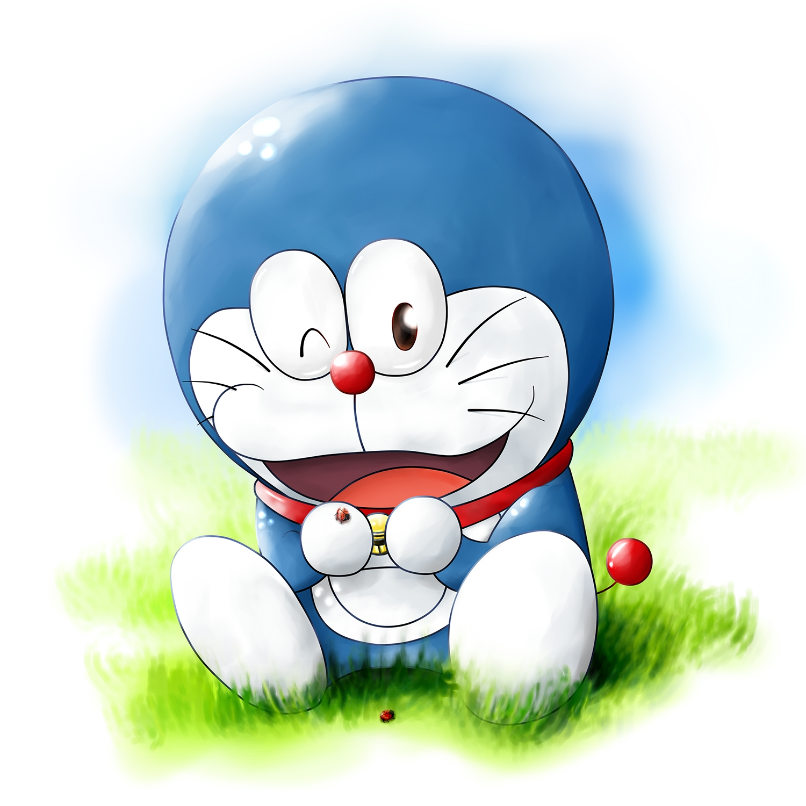
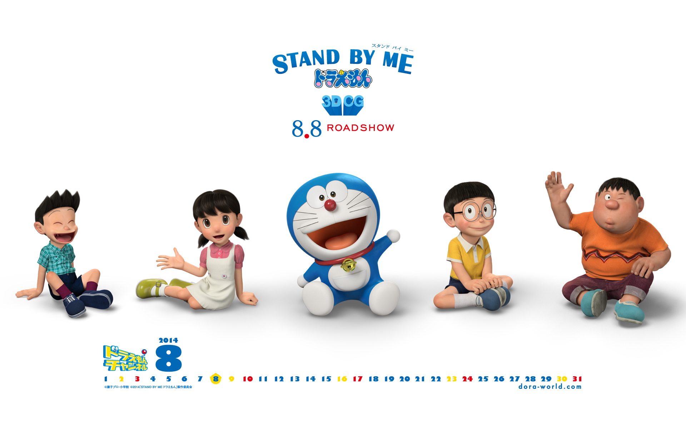

About Doraemon
Everything started in the 22nd century, when Doraemon (a faulty robot) was auctioned to a family suffering from abject poverty. This family, the posterity of Nobi Nobita, suffered dramatically all thanks to the debts which Nobi Nobita left behind to them as his legacy. Nobita's great great great grandson (correct me if I am wrong) decided that there wasn't a way out of this mess, and hence decided to send Doraemon back in time, to 250 years ago, to where Nobi Nobita lived, to help Nobita become a better person. This would ultimately change the future and improve the living conditions of Nobita's descendants.
Doraemon's characteristics
- He's intelligent
- He's kind-hearted
- He's friendly
- He's helpful
- He's silly(sometimes)
- He has the tendency to panic during emergencies
Doraemon's friends
- Nobita Nobi is the other major character of the series. He is a fourth grader in Tokyo’s Nerima Ward and an only child. He wears glasses, a red or yellow polo shirt with a white collar, and blue shorts. Nobita’s character flaws are endless: he is lazy, uncoordinated, dim-witted, frail, plain-looking, unlucky, and bad at sports. Nobita’s typical day consists of arriving late to class, scoring zeros on his exam, getting lectured by his teacher, being bullied by classmates Gian and Suneo, falling into curbside rain gutters, being chased by dogs, and getting yelled at by his mom for refusing to do his homework.
Despite his flaws, Nobita possesses some unique talents such as his unrivaled marksmanship and ability to weave intricate string figures. Although Nobita is usually portrayed as being cowardly, he has often risked his life to help save others or even entire civilizations (as seen in full-length stories).
- Shizuka Minamotois the smart, kind, and pretty neighborhood girl who is the object of Nobita’s affections. She takes baths several times a day. Somehow, Nobita always seem to unintentionally walk in on her (via the Dokodemo Door) while she is still in the bathtub. She is also known for taking piano lessons unwillingly, which is sometimes used as an excuse for declining to hang out with Nobita. Her true passions are sweet potatoes and the violin, in which her playing is as atrocious as Gian’s singing. Due to Doraemon’s intervention, Shizuka will become Nobita’s wife in the future timeline.
- Takeshi Godais known for his confidence in his terrible singing voice. He regularly subjects the neighborhood children to horrendous singing recitals, which is sometimes combined with his equally bad homemade dinner. Several of the stories revolve around Nobita and his friends’ efforts to avoid Gian’s concerts.
